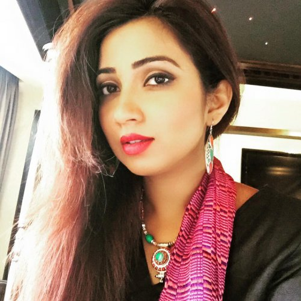
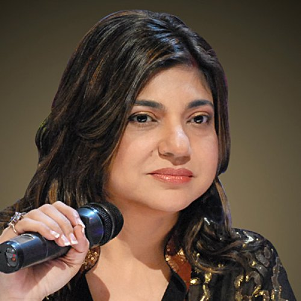
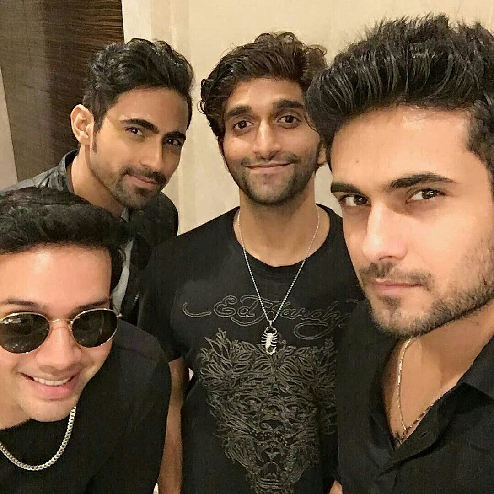

Hindi
1.Shreya Ghoshal
Shreya Ghoshal is an Indian playback singer, composer, and music producer who has recorded songs in various Indian languages and has established herself as a leading playback singer of Indian cinema. At the age of sixteen, she was noticed by the mother of film-maker Sanjay Leela Bhansali when she entered and won the television singing reality show Sa Re Ga Ma. Following that, she made her Bollywood playback singing debut with Bhansali's romantic drama Devdas for which she received a National Film Award and a Filmfare Award for Best Female Playback Singer.
2.Shankar Mahadevan

Shankar Mahadevan is an Indian singer and music composer who is a part of the Shankar Ehsaan Loy trio team that provides music to films. He is known for his work on Kal ho naa ho, Dil Chahta Hai, Bhaag Milkha Bhaag, and his album Breathless. He acknowledges the fact that his strong training in classical music under T.K. Balamani has been the pillar of his strength. Shankar Mahadevan was awarded the Padma Shri on March 11 2019 who dedicated his award to his two partners in music -Ehsaan Noorani and Loy Mendosa because a lot of his music had been made with them.
3.Alka Yagnik
Alka Yagnik is an Indian playback singer who has sung maximum number of female solos during her career. She began her career at the young age of six singing bhajans for All India Radio. She shares the title for winning maximum number (7) of Filmfare Awards as a female playback singer. She got her big break with the song "Ek Do Teen" from the film Tezaab(1988) which won her first out of the seven Filmfare Awards. Her first song was for the film Payal Ki Jhankaar in (1980).In 1993, Yagnik sang a controversial song "Choli Ke Peeche Kya Hai" which got her her second Filmfare.
4.Sanam
Sanam is an Indian pop-rock band formed in 2010 currently based in Mumbai, India known for its renditions of old classic Indian Bollywood songs as well as original music. The band SANAM consists of Sanam Puri (lead vocalist), Samar Puri (lyricist & lead guitar), Venkat S (bass guitar), and Keshav Dhanraj (Drums). In 2003, Venky and Samar were batchmates in Indian School, Muscat, both of them played guitar and planned to start a band so they got Samar's younger brother, Sanam Puri in the band to join as a singer. After they moved to India for they won the title of 'Times Music Supastars'.